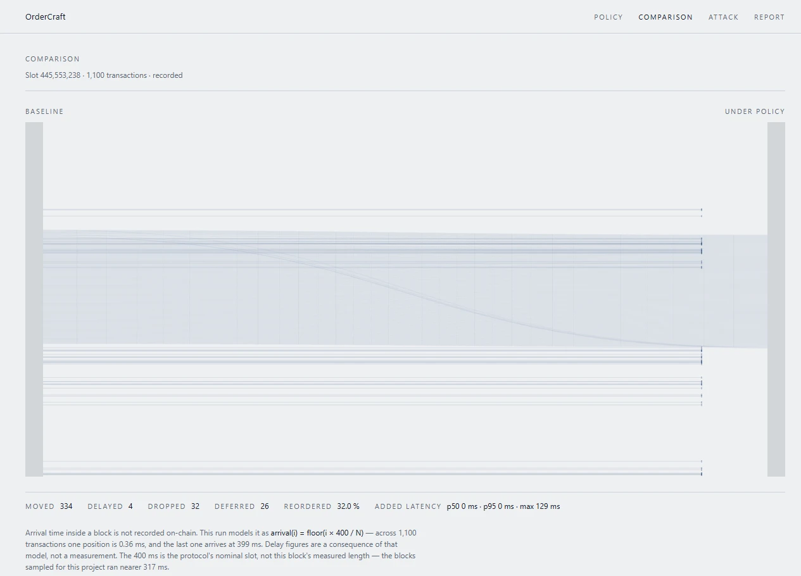

See what an ordering policy would have done to a real block.
OrderCraft is a visual builder for transaction-ordering policies with a simulator that replays them on recorded Solana mainnet slots. Compose a policy from three primitives, run it on a block that actually happened, and read what it moved, delayed, dropped and deferred — before anyone writes a line of validator code.
- moved
- 334
- delayed
- 4
- dropped
- 32
- deferred
- 26
- reordered
- 32.0 %
- maximum added delay · p50 0 ms
- 129 ms
One run of the policy the application opens with. Recomputed for this page on 2026-09-25; the browser, the API and this page agree to the digit.
What it does
Compose a policy
Three primitives and no more: a speed bump that delays a class of transactions by a window, a batch auction that groups a window into one execution price with a deterministic order inside it, and allow/deny over named programs and signers. Ranges are checked before the run; a half-typed policy does not compile, and the policy’s hash shows a dash until it does.
Run it on a block that happened
Fifty-three recorded mainnet slots ship inside the repository, so the demo needs no RPC key, no account and no database. A run over a slot of up to 1,500 transactions takes p50 1.5 ms, p95 3.0 ms against a three-second budget, and fifty repeats of the same run are identical fifty times out of fifty.
Hand the result to someone else
A policy is addressed by the hash of its own body, so
#/p/<hash>/compare opens that policy and its run on any
machine. Asking for the same run twice returns the same run id instead of
computing it again — measured across two machines, not just inside one process.
A link is access: there is no sign-in, and nothing here is private.

How it works, and what it assumes
-
A policy is a sequence of steps. Each step shifts time, marks a batch or drops a transaction. The order is decided once, at the end.
-
applysorts once, by(priority, time, original index, signature). The key ends in the signature, so a tie is impossible by construction and the same input always gives the same output. -
Arrival time is a model, not a measurement. A slot records order, not time, so
arrival(i) = floor(i × 400 / N). 400 ms is the protocol’s nominal slot; our own cache measures about 317 ms per slot. The constant works as a scale, not a clock — the figures are the same under both — and the result screen says so. -
The metrics are descriptive, not counterfactual. No price is modelled and no alternative execution is computed. Deferred is not dropped: a transaction pushed past the slot boundary was not refused, it would not have made the block on this scale, and the two are counted separately.
What was measured
| Criterion | Budget | Measured |
|---|---|---|
| Run time SC-001 | slot ≤ 1,500 tx in under 3 s, p95 | p50 1.5 ms / p95 3.0 ms |
| Determinism SC-002 | 50 repeats identical | 50 / 50 |
| First screen SC-006 | interactive under 2 s on a 3G profile | 1,207 ms |
| Clean clone SC-009 | demo reproduced in under 10 min | ~17 s |
| Run idempotence | a repeated run is not computed twice | same id, two machines |
| Detector recall SC-003 | ≥ 90 % on exhaustively labelled slots | recall 0 of 1 — failed |
- SC-006 — measured with Lighthouse 12 on its own mobile profile (1,638 Kbit/s, RTT 150 ms, CPU ×4) against the published site: performance 100, total blocking time 0 ms, desktop profile 401 ms. The first screen has room because it does not fetch the slot — 82 KB of bundle; the half megabyte of recorded block arrives only on the screens that draw one.
-
SC-009 — measured from a clean clone in a temporary directory with no
.env, no RPC key and no database: clone 4 s, install 8 s, dev server 3 s, walkthrough 2 s. -
Idempotence — the same run computed locally against the project’s Postgres
and asked for through the deployed API came back with the same id —
0.71 s to compute,
0.33 s to hand back. A unique key on
(policy hash, slot)holds it, not a process. - SC-003 — the detector is silent on the only confirmed attack in our set. Forty-two slots were labelled exhaustively — 271 leg pairs — and one sandwich was confirmed (445694841 #341/344, three of three blind labellers). The detector does not report it, because the round trip closed at a loss and the rule requires profit. Precision cannot be measured at all: nothing was reported. Dropping the profit check would give recall 1 of 1 at 13 % precision against a 5 % ceiling, so the rule stands until the denominator grows.
What it does not do
- There is no integration with Jito BAM, and there will not be one. The plugin framework is closed and has no public SDK. Nothing here demonstrates that a policy works on a live validator, and no criterion claims it does.
- The detector finds nothing on the demo block. The attack screen shows its empty state, and that is the measured result rather than a missing feature — see SC-003 above.
- Only sandwich. Backrun arbitrage, JIT liquidity and liquidation races are not detected at all.
- Nothing is deployed on chain and no funds are held. The simulator works with order and metadata; it does not reconstruct chain state and does not compute how a transaction would have executed in another order.
- There are no accounts, so there is no privacy. A link is access. Do not put sensitive address lists in it.
- The labels are not a human gold standard. They were written by blind model agents, one slot each, with no access to the detector, its rule, the documentation or the network. That caveat travels with every figure the label set produces.
Questions
Does this protect my users?
No. It shows what a policy would have done to a block that has already happened. It is a test bench, not production ordering, and there is no path from here to a live validator.
Do I need an RPC key, an account or a database?
No. Fifty-three recorded slots are in the repository;
pnpm install && pnpm dev is the whole demo. Keys matter only if
you fetch slots of your own with the CLI.
Why does the test suite fail on purpose?
pnpm gate ends with 489 passed, 5 skipped and exactly one failure, and
that failure is SC-003. It is a measurement, not a broken build; softening the
threshold would make the number meaningless.
What is the 400 ms?
The protocol’s nominal slot, used as the scale for modelled arrival times. Our cache measures about 317 ms per slot. The run’s figures are the same under either, which is why the constant is allowed to stay nominal — and why the result screen says it is a model.